Slide 1
Rocket Science & Orbital Mechanics
How Rockets Reach Space and Stay in Orbit
- Presenter: Katie Carlson
- Role: Command & Data Handling Engineer, NASA L'SPACE Academy (MCA)
- Affiliation: California Polytechnic State University (Cal Poly)
- Fields: Computer Science Major; Physics & Aerospace Minors
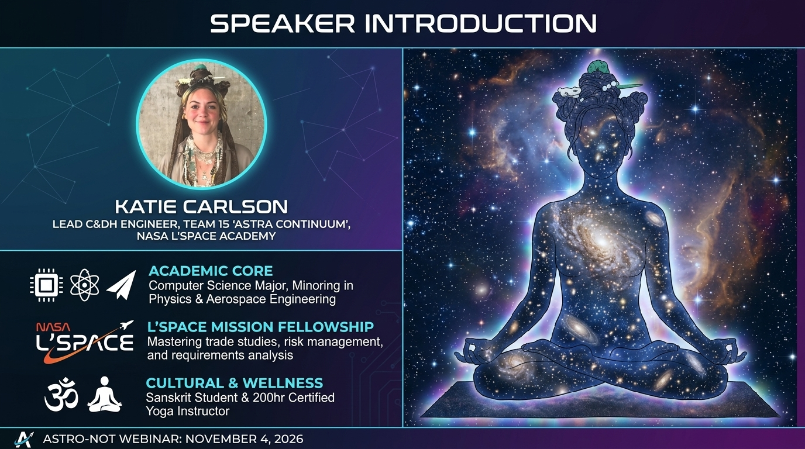
Slide 2: Speaker Profile
About Katie Carlson
- The Tech Side: CS major developing embedded software & telemetry loops for flight hardware.
- The Aerospace Side: Lead C&DH Engineer for Team 15 "Astra Continuum" (NASA L'SPACE MCA).
- The Human Side: Sanskrit scholar, mindfulness advocate, and certified 200-hr yoga instructor & sound practitioner.
- The Mission: Bridging software engineering, space mechanics, and holistic problem-solving.

Slide 3: Definition of Space
What is "Space"?
- Space is closer than you think — only ~100 km (a 1-hour highway drive straight up).
- Getting to space is easy; staying in space requires extreme speed.
- The Kármán Line (100 km): Boundary where fluid aerodynamic lift vanishes and orbital mechanics takes over.
- The Space Paradox: Space isn't hard because it's far; it's hard because you must travel fast enough to continuously fall around Earth.
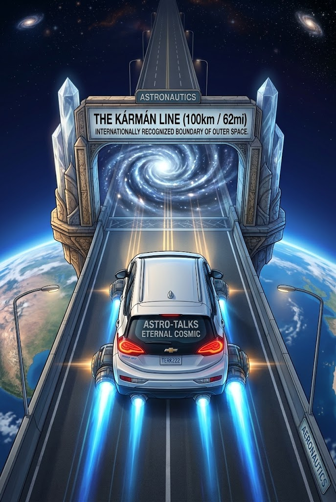
Slide 3.1: The Vertical Highway
Driving to Space
"Let's begin with a foundational question: What actually is 'space'? Where does it begin? Space is geographically much closer than most people realize. The internationally recognized boundary of space is the Kármán Line, located at an altitude of 100 kilometers—roughly 62 miles. If you turned your car vertically and drove straight up the highway at 60 miles per hour, you would arrive at the edge of outer space in exactly one hour!"
- Geographic Boundary: 100 kilometers (62 miles) above sea level.
- Driving Analogy: A 1-hour highway drive vertically at 60 mph reaches outer space.
- Aeronautics vs. Astronautics: Transition point from aerodynamic flight to orbital dynamics.
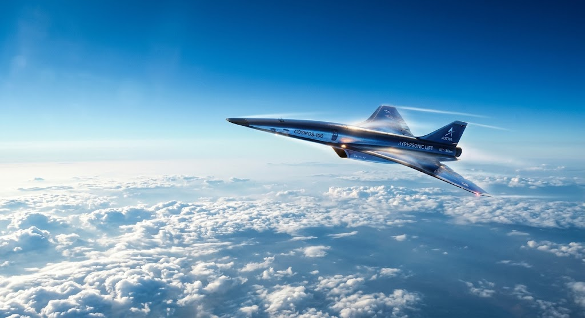
Slide 3.2: Aerodynamic Lift & Altitude
Aerodynamic Lift in Thin Atmosphere
"Below 100 kilometers, aircraft rely on aerodynamic lift generated by air molecules passing under their wings. As you climb higher, the atmosphere becomes thinner. To generate the same lift in thin air, an aircraft must fly faster and faster."
- Aerodynamic Lift Mechanism: Air molecules flowing across wing surfaces generate the pressure differential required for lift.
- Atmospheric Density Gradient: Air density drops exponentially with altitude, reducing available lift forces.
- The Velocity Tradeoff: Maintaining equal lift in thinner air requires aircraft to fly at increasingly higher speeds until reaching orbital velocity at the Kármán Line.
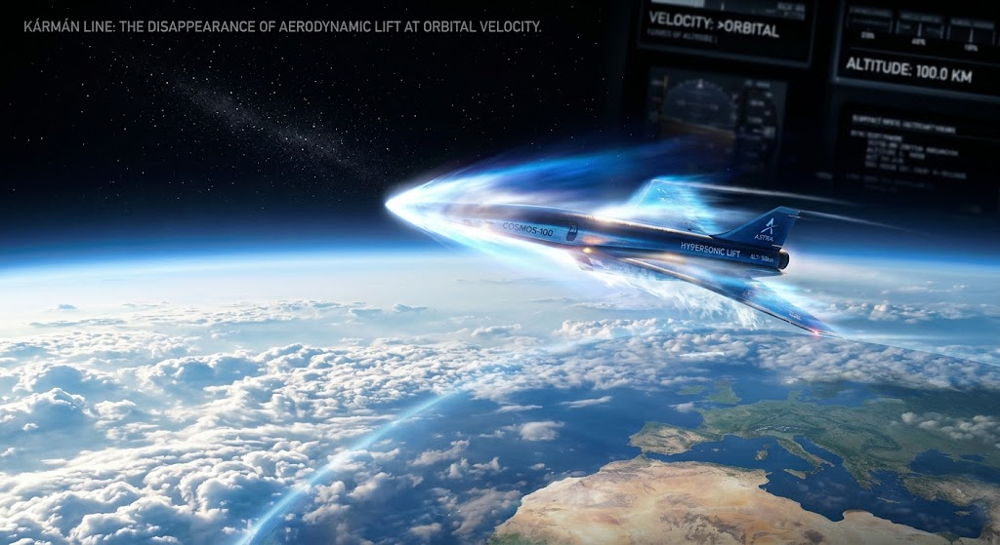
Slide 3.3: Aeronautics to Astronautics
Where Aeronautics Ends
"At the Kármán Line, the air becomes so sparse that to generate enough aerodynamic lift to hold the aircraft up, you would have to travel faster than orbital velocity itself. At that precise mathematical boundary, aerodynamic lift vanishes, aeronautics ends, and astronautics takes over."
- Sparse Atmosphere Threshold: Air density drops so significantly that air-molecule lift forces are no longer physically sufficient to support vehicle weight.
- The Velocity Crossover: Required aerodynamic flight velocity exceeds orbital velocity (~7.8 km/s), making atmospheric lift impossible.
- Domain Shift: Complete handoff from fluid dynamic controls (aeronautics) to celestial orbital dynamics and reaction engine control (astronautics).
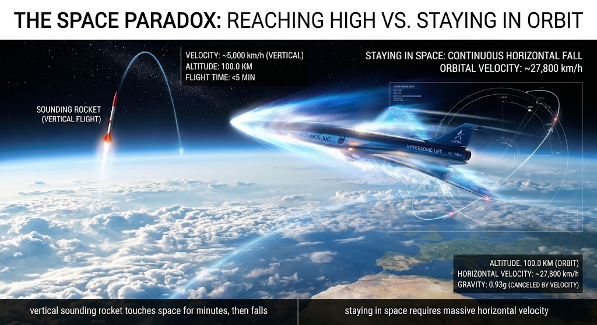
Slide 3.4: The Space Paradox
Vertical Ascent vs. Horizontal Velocity
"This brings us to The Space Paradox: Space isn't hard because it's far away; space is hard because you have to travel incredibly fast horizontally. A vertical sounding rocket can touch space for a few minutes and fall right back down. But to stay in space, you must stop fighting gravity vertically and start moving horizontally fast enough to continuously fall around the Earth."
- Sounding Rockets vs. Orbital Vehicles: Vertical thrust touches space (~100 km) momentarily before gravity pulls the vehicle straight back down.
- The Horizontal Speed Factor: Staying in space requires accelerating to ~7.8 km/s (17,500 mph) horizontally.
- Continuous Free-Fall: Orbit is achieved when horizontal speed matches Earth's curvature, turning vertical collapse into endless orbital fall.

Slide 4: Part 1 - Propulsion
Leaving Earth: Newton's Third Law
- Action & Reaction: Force = d(mv)/dt. Expelling momentum downward drives payload upward.
- Vacuum Propulsion: Rockets push against their own exhaust momentum, not atmospheric air.
- Thrust Vector Control (TVC): Gimbaling engines to control pitch, yaw, and flight stability.
- Atmospheric Drag: Overcoming dynamic resistance during dense atmospheric ascent.
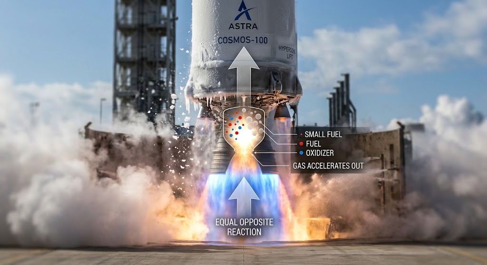
Slide 4.1: Momentum Exchange
How Rocket Propulsion Works
"A rocket pushes against the momentum of its own internal propellant. Inside the combustion chamber, high-energy chemical bonds ignite, creating superheated gas that accelerates out of the nozzle. The exit of that mass creates an instantaneous, equal push in the opposite direction."
- Internal Combustion: High-energy chemical bonds ignite inside the chamber, creating superheated, high-pressure gas.
- Mass Acceleration: The nozzle accelerates the expanding gas outward at extreme speeds.
- Equal & Opposite Force: A rocket doesn't push against air—it propels forward by pushing against the momentum of its own ejected propellant (Newton’s Third Law).
- Propellant Injection: Fuel and oxidizer are sprayed as atomized droplets ("small fuel") to maximize mixing efficiency and rapid ignition.
- Directional Thrust: Downward gas acceleration generates an instantaneous, equal reaction thrust upward.
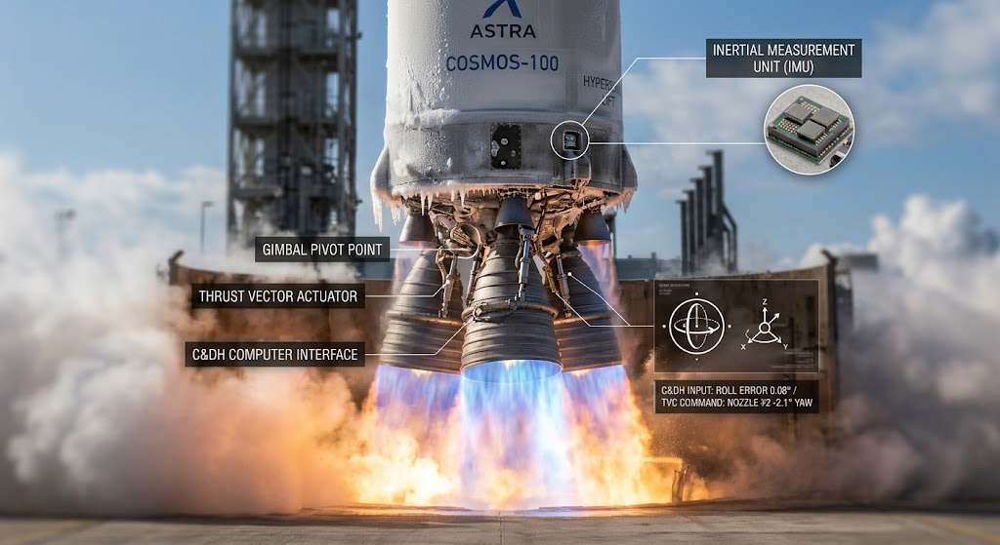
Slide 4.2: Steering Without Air
Thrust Vector Control (TVC)
"To keep this energy stable during launch, we use Thrust Vector Control (TVC). Instead of using aerodynamic fins—which become useless in thin air—the Command and Data Handling (C&DH) software reads data from inertial measurement sensors and commands hydraulic actuators to physically gimbal, or tilt, the engine nozzle. By redirecting the thrust vector by fractions of a degree, the rocket constantly realigns its center of mass, balancing like a broomstick on the tip of your finger."
- Beyond Aerodynamics: Traditional aerodynamic fins become useless in thin air, requiring active nozzle gimbaling for flight stability.
- Gimbal Pivot Point: Acts as a multi-directional universal joint where the engine mounts.
- Thrust Vector Actuators: Hydraulic or electromechanical rams push and pull to tilt the nozzle in real time.
- Inertial Measurement Unit (IMU): The "inner ear" of the rocket, using gyroscopes and accelerometers to monitor orientation and linear motion.
- Millisecond Corrections: C&DH software reads IMU telemetry and tilts nozzles within milliseconds to maintain trajectory alignment.
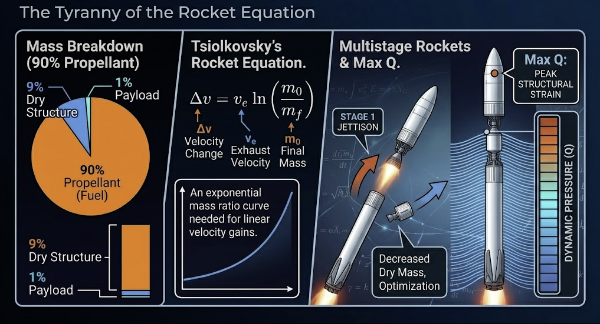
Slide 5: Rocket Dynamics
The Rocket Equation
- Tsiolkovsky's Rocket Equation: Δv = v_e * ln(m0 / mf). Exponential fuel growth for linear speed gains.
- Mass Breakdown: Typical rockets are ~90% propellant, ~9% dry structure, and only ~1% payload.
- Multistage Rockets: Shedding empty propellant tanks to decrease dry mass and optimize energy efficiency.
- Max Q: Point of maximum dynamic pressure where structural strain peaks.
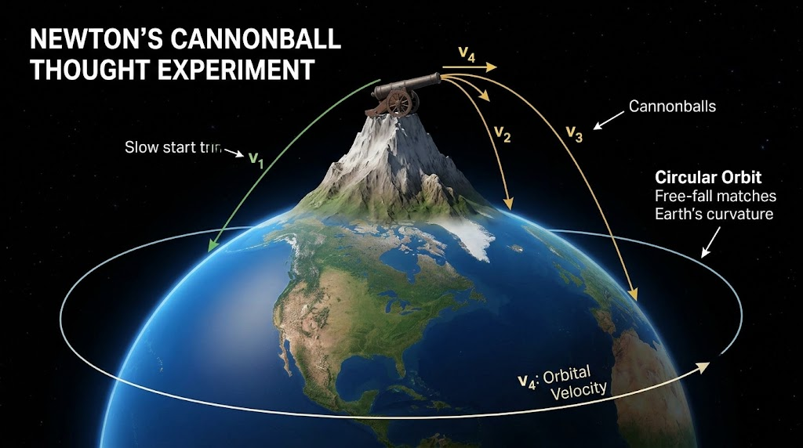
Slide 6: Orbital Mechanics
What is an Orbit? (Falling Constantly)
- Gravity in LEO: Still ~90% of Earth's surface gravity!
- Free-Fall Motion: An orbit is free-fall along a curved spacetime geodesic matching Earth's curvature.
- Newton's Cannonball: Fire a projectile fast enough horizontally so the curve of its trajectory matches the curvature of Earth.
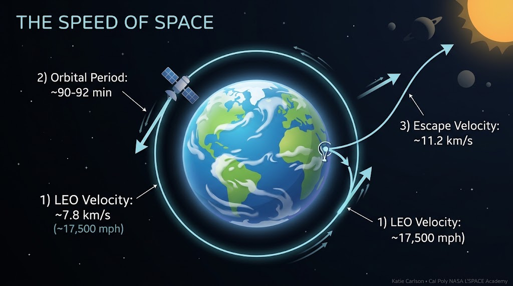
Slide 7: Orbital Speeds
The Speed of Space
- LEO Velocity: ~7.8 km/s (~17,500 mph / 28,000 km/h).
- Orbital Period: ~90 to 92 minutes in Low Earth Orbit.
- Escape Velocity: ~11.2 km/s breaks bound orbit into interplanetary trajectories.
Slide 8: Interactive Orbit & Maneuver Simulator
7.67 km/s
Orbital Speed
400 km
Altitude (Periapsis)
400 km
Apoapsis Altitude
0.000
Eccentricity (e)
0.0°
Inclination (i)
92.6 min
Orbital Period
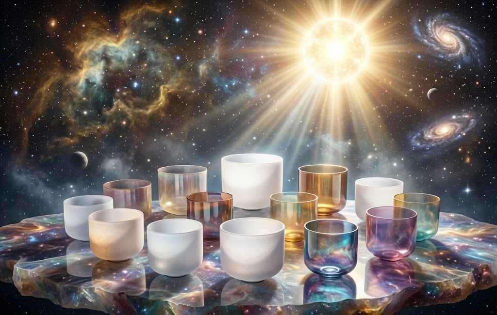
Slide 9: Q&A & Wrap Up
Connecting the Dots
"The sky is not the limit; it is the starting point."
- Harmonizing technical execution, aerospace systems engineering, and personal awareness.
- Contact: Katie Carlson — Command & Data Handling Engineer
- Event Date: November 4, 2026 Webinar Session (ASTRO-TALKS)
Slide 10: L'SPACE Testimonial
NASA L'SPACE Academy Experience
"L’SPACE Mission Concept Academy has been an inspiring traversal that feels like launching directly into the realm of operational space exploration. Through immersive experience in trade studies, systems engineering, risk management, and requirements analysis, I am mastering how to translate complex scientific visions into definitive engineering frameworks. L’SPACE creates a seamless continuum into the workforce by mirroring the dynamic environment of NASA-style mission design, honing my technical communication, project management, and collaborative problem-solving skills under rigorous industry standards. My greatest insight from this experience has been seeing how seamless alignment across cross-disciplinary sub-teams drives mission success, proving that every individual effort harmonizes with a shared cosmic purpose. I’m profoundly inspired by the opportunity to align my trajectory in tandem with such brilliant peers, as this program drives the development of an elite generation of space leaders and a top-tier mission-ready workforce towards careers in exploring the cosmos!"
- Author: Katie Carlson
- Role: NASA L'SPACE (MCA) C&DH Engineer — Team 15 "Astra Continuum"